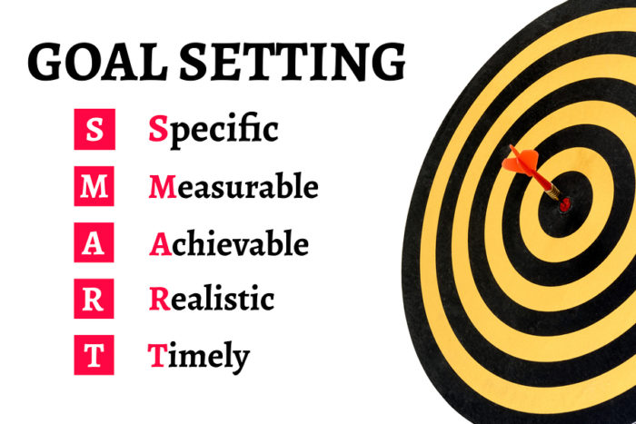
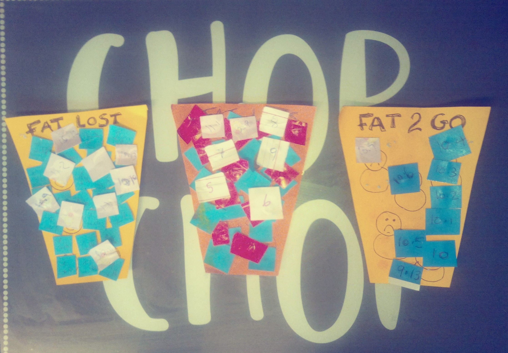
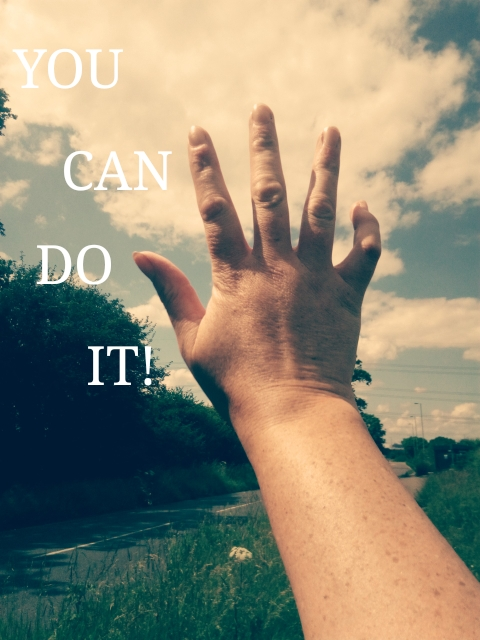

If you do something you love you don't need much to keep your motivation going! And hopefully my tips for diet and exercise will help make your journey
feel natural and become your normal. Once you consistently lose 1-2lbs a week and you see and feel the changes in your body those things alone are great motivation.
However, especially in the beginning, it is both harder and most important to keep your motivation up! There are several steps you can take in order to GET motivation
and also KEEP it!
Step One: Set Your Goals!

The bigger picture may seem far away! If you have 4, 5, 6 or more stone to lose it can seem daunting and feel like an impossible mission before you even start.
I had 6 stone to lose but even losing just one stone gave me health benefits. My breathing in particular and it was for this reason that I really decided that I HAD to lose weight.
So it is best to tackle this one stone at a time. Set your goal in stages. So first just tell yourself that you want to lose 14 lbs (or 7lbs or kgs or whatever you choose). Tell yourself
that you will reassess once you reach your goal. Be realistic. You are likely to lose more pounds when you start out so your first loss may be 4lbs or 5lbs or so. Which is
excellant but do not expect these losses every week. Your body will adapt quickly and your losses are likely to be 1-2lbs a week. So it could take upto 2 months to lose one stone.
But this is safe and recommended.
Keep On Researching!
Whenever you feel yourself flagging reach out! LOOK STUFF UP! Can be about exercise, calorie counting, foods under 100 calories, new recipe ideas, benefits of exercise, differences between swimming and running..... ANYTHING!
Reading tips, getting fresh ideas, just remembering why you are on this journey and where you want to get to are great motivators to keep you going! And there is a wealth of information out there!
Some of it might be junk. Half of it might be conjecture. But it will help! Of course right here on my pages I have left lots of links so come back and explore more along your way!
People Power!
If you are lucky you may know other people in your circle of family or friends who are also on a weight loss journey. This is great as they will likely want to hear all about your successes (and fall downs) and may
have tips to share. However sometimes this can actually backfire because if they lose their way and give up they may unintentionally wish you to fail too to feel better about themselves. Or sometimes people get so used to seeing you
at a larger size they worry you are 'going too far' when you start losing more than just a couple of stone. And of course sometimes people around you are just not interested in hearing about health and diet stuff. This is where
joining an online community can be a good idea. I strongly recommend this NHS weightloss forum. Just being able to share your success, have a whinge about downfalls, hear about other peoples experiences and give advise
to others in the same boat as you are brilliant ways to keep your own morale and motivation going with like-minded people who WILL understand exactly how big a deal it is to say 'whoop I've finally lost 7lbs!'.
Keep a visual record!

The picture above is my actual chart that I kept in my kitchen. It began with just one 'paper cup' with each square representing one pound of weight loss. Some people like to keep a jar and fill it with the number of marbles (pounds) they want to lose. I chose a paper representation as it was easier for me but you can choose
any method to represent your weight loss that you want. The idea is to have something you can see and to put it somewhere you can see it! Mine was in the kitchen. I loved being able to move each square over from my 'fat to lose' cup to my 'fat lost' cup. And it never stopped amazing me to see the amount I have lost in a visual
medium. Another idea I did was to make a paper mache butterfly with my daughter for every 5lbs weight I lost and then hung them from the ceiling. Beautiful, inspiring and a constant reminder of how well I had done.
The changes in your body as you lose weight is vast but you don't always notice it and it is so gradual you can never truely picture where you was to where you are now so keeping a record, chart. jar or other visual representation of your journey will definitely help keep
your motivation up!
Visualisation! Breathing....And trees! What?!!
Along my own journey I came across an interesting youtube video. It claims that a Japanese man who was seeking help with a bad back found that the breathing exercises he was given to do actually made him lose weight. The video is just below. I mention this
video as I found it interesting that fat is lost in the Carbon Dioxide we breathe out. I cannot say for sure if it helped with my weight loss but often when driving in my car I like to do the breathe in for 3 seconds and then out for 7 seconds exercise. At the same
time I would visualise the fat in my body leaving my body. Later on when I took up running with the Couch 2 5K app I would envision fat leaving my body as I exhaled. I would envision yellow or gold molecules floating away in front of me! A good distraction from
the exertion of the run!
There are many people who believe in the power of the mind and there can be no harm in trying to literally tell your body to help get rid of its fat! Tell it you do not need to hold on to your fat stores any longer! Who knows, maybe it will listen?
What about the trees?
Ok... This is some serious food for thought! (Ha! Calorie-free food! Yipee!) Anyways watch the video below and then have a think....
So if we breathe out fat in our carbon dioxide... does that mean tree's are made up, in a way, of the fat that we lose? I don't know about you but I found this concept fascinating! And most certainly, next time you are near a big tree, know
that it is actually sucking in your mass! Your fat! Good on them!

Below are some more links to read through. A good start to finding and keeping your motivation!